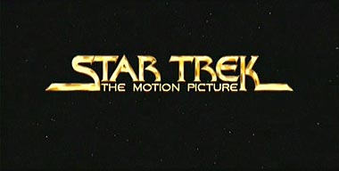

|

STAR TREK:
THE MOTION PICTURE
1979


Sinopse
comentada
Comentrios
Citaes
Os novos
efeitos
Trivia
Ficha
Tcnica
O
DVD
A Aventura Humana est
apenas
comeando...
Antes de entrar no tpico de comparaes
entre as verses do filme, preciso esclarecer alguns aspectos.
Por falta de dinheiro e devido presso da Paramount em lanar
rapidamente o filme em 1979, o resultado foi um produto defeituoso, ou
seja, um filme inacabado e mal editado. Tinha muitas cenas
desnecessariamente longas e outras repetitivas ao extremo. Muitos efeitos
especiais tambm foram deixados incompletos por absoluta falta de tempo
para termin-los.
Agora, mais de 20 anos depois, a Paramount resolveu finalmente consertar o
filme, terminando cenas inacabadas e contratando o diretor do filme,
Robert Wise, para reedit-lo da maneira que gostaria de ter feito em 1979
se no fosse a pressa em lanar logo o filme pronto.
A empresa Foundation Imaging foi contratada para criar novos efeitos
especiais e melhorar outras tomadas incompletas. A promessa lanada aos fs
foi no sentido de que o filme no seria de forma alguma adulterado,
recebendo apenas um tratamento melhor para corrigir algumas falhas. Os
novos efeitos especiais, gerados por computador, seriam criados como se
fossem efeitos do final da dcada de 70 para no se diferenciarem do
restante do filme. As novas cenas foram at envelhecidas para parecerem
com o original.
Agora que podemos assistir ao produto final em DVD, podemos concluir que
as promessas da Foundation foram honradas ao extremo. Os novos efeitos
especiais se mesclaram perfeitamente com os antigos efeitos, sendo que
para algum que nunca viu o filme ser difcil diferenciar o que
novo do que velho.
As mudanas no filme foram feitas com o devido respeito obra original,
proporcionando uma experincia mais rica e envolvente, sem comprometer o
desenrolar da trama em si, que continua exatamente igual ao original em
contedo.
Confira as alteraes:
Abertura
A primeira diferena entre as verses so os prprios crditos de
abertura. Enquanto que no original os crditos, em letras simples, eram
sobrepostos em um fundo preto, na nova verso h um fundo com estrelas
passando, ao estilo de Jornada II, e os crditos, com novas
fontes, vo se materializando.

Resultado: A materializao dos crditos por meio de um efeito
de "fog", que lembra vagamente os crditos de "Primeiro
Contato", no foi a melhor das opes disponveis, mas ao
todo temos agora uma abertura mais sofisticada.
{kind=link}
Vulcano
No original o planeta Vulcano interessante, mas demasiadamente
exagerado em sua paisagem. H vulces demais, as cores so muito
artificiais e h uma total ausncia de uma atmosfera no cu, tanto que
pode-se ver nitidamente uma imensa lua no cu.
{kind=link}
Na nova verso Vulcano ficou mais real, com uma paisagem mais elaborada, cores mais apropriadas e finalmente h uma atmosfera.
{kind=link}
Na cena em que Spock caminha em direo aos sacerdotes Vulcanos, a paisagem era muito confusa, com vrias estruturas rochosas indefinidas e falta de profundidade tridimensional.
{kind=link}
Agora, na nova edio temos uma fantstica paisagem com imensas esttuas em volta do cenrio.
{kind=link}
Essa era a concepo original para o filme de 1979 como pode-se verificar pelos storyboards originais.
{kind=link}
interessante apontar que o Spock que agora vemos caminhando foi totalmente gerado por computador. O efeito ficou bastante real.
Resultado: Fantstico! Vulcano est
mais belo e extico do que antes, mais de acordo com a idealizao
original e mais parecido com o planeta que veramos nos filmes
posteriores.
So Francisco
A edio original era bem adequada, mas no mostrava So Francisco em
muitos detalhes.
{kind=link}
Na nova edio, tambm realizada com base nos storyboards originais, temos uma cidade mais elaborada, com mais prdios e diversos outros detalhes mais realistas.
{kind=link}
{kind=link}
{kind=link}
Entretanto, muitas das paisagens ao fundo so
nitidamente montagens de fotos digitalizadas, tornando o resultado final
um pouco artificial.
Resultado: As novas cenas so muito bem feitas, mas faltou
capricho nas cenas de fundo.
Frota Estelar
No original h um hangar muito bem elaborado, com uma mesclagem excelente
de atores reais, cenrios matte-paitings e miniaturas.
{kind=link}
Na nova edio essa cena foi melhorada substancialmente, com adio de um fundo mais real mostrando a Ponte Golden Gate, mais naves e mais detalhes no cenrio.
{kind=link}
S como curiosidade, podemos ver uma nave auxiliar da Srie Clssica na extremidade direita da foto. Um belo toque!
Resultado: Muito bom. O que j era
muito bem realizado ficou melhor ainda, sem saltar aos olhos com relao
ao produto original.
Wormhole
A cena original j era muito boa, com excelentes efeitos especiais feitos
base de lasers e fumaa. O nico ponto fraco era a destruio do
asteride, mostrando apenas uma simples exploso no espao.
{kind=link}
Agora, na nova edio, vemos o asteride explodindo bem na frente da Enterprise enquanto esta sai do wormhole.
{kind=link}
Resultado: As cenas novas contriburam para dar mais sentido cena, pois antes no era muito claro o que tinha ocorrido com a destruio do asteride.
Janela
Uma simples, mas eficaz, insero na nova edio mostra as naceles de
dobra da Enterprise pela janela. Na edio original havia apenas as
estrelas.
{kind=link}
Resultado: Uma boa adio.
V'Ger ataca a Enterprise
Na edio original, logo aps o primeiro disparo contra a Enterprise,
que enfraquece seus escudos, V'Ger dispara novamente, mas vemos apenas o
disparo se aproximando atravs da tela na ponte de comando.
{kind=link}
Na nova edio foi criada uma cena totalmente gerada por computador, inclusive a Enterprise, onde podemos ver a mesma cena s que de um ngulo externo.
{kind=link}
Resultado: Incrvel! A Enterprise
foi recriada com perfeio graas s tecnologias modernas em efeitos
especiais. preciso tambm resultar o meticuloso trabalho em fazer a
nova cena como se tivesse sido filmada em 1979, incluindo imperfeies e
granulaes cena para parecer que a fonte uma pelcula de um
filme de mais de 20 anos.
A sonda de V'Ger
Na edio original, assim como na cena anterior, podamos ver a sonda
se aproximando somente pela tela da ponte.
Na nova edio tambm foi criada uma cena gerada por computador em que
vemos pelo ngulo externo.
{kind=link}
Resultado: Excelente tambm.
V'Ger se aproxima da Terra
Na edio original nunca vemos inteiramente o que V'Ger. Por fora
parecia uma gigantesca nuvem sem forma definida. Quando a Enterprise
penetra na nuvem vemos vrias estruturas imensas, porm indefinidas.
Na nova edio finalmente podemos ver V'Ger quando este se aproxima da Terra. A nuvem que cobria a estrutura se dissipa e vemos uma imensa e sinistra nave.
{kind=link}
Resultado: Fantstico!
Impressionante! Talvez a melhor cena gerada por computador includa no
filme. Finalmente, aps mais de 20 anos, podemos ver o real formato de
V'Ger. Entretanto, entrou a uma certa dose de criatividade da equipe da
Foundation, pois no havia nenhum registro em storyboard do formato da
nave.
V'Ger dispara em ameaa Terra
Na nova edio tambm podemos conferir V'Ger disparando aqueles projteis
de energia em direo Terra.
{kind=link}
Resultado: Igualmente fantstica.
Podemos sentir como nunca a ameaa que V'Ger representa ao nosso planeta.
A Enterprise levada ao encontro de V'Ger
pessoalmente
Na edio original essa cena mostrada quase que inteiramente atravs
da tela da ponte de comando.
{kind=link}
Na nova edio a Enterprise passa por mais uma cmara antes de chegar "Ilha de V'Ger". "Ilha de V'Ger" foi o nome dado pela produo do filme estrutura onde fica a central de V'Ger. Essa cena foi tambm gerada por computador com base em storyboards originais para o filme de 1979.
{kind=link}
A prpria Ilha de V'Ger tambm sofreu significativas modificaes na nova edio. Ela agora muito mais elaborada e bela, parecendo mesmo uma ilha no meio do nada.
{kind=link}
Resultado: Temos agora uma cena mais
eficaz do que originalmente.
Kirk, Spock, McCoy, Decker e Ilia vo at a
Ilha de V'Ger
Aqui temos, tambm, uma das mais significativas mudanas entre as duas
edies. Na edio original vemos a Enterprise estacionada beira da
Ilha de V'Ger.
{kind=link}
Os atores aparecem em cima do disco da Enterprise e olham frente a gigantesca estrutura.
{kind=link}
Na nova edio vemos uma ponte se materializando at a Enterprise para que os personagens possam caminhar at a Ilha de V'Ger .
{kind=link}
{kind=link}
Nesse aspecto, embora as novas cenas sejam muito mais interessantes, as antigas eram mais bem feitas. Comparando-se as fotos acima, vemos que a Enterprise parece mais real nas cenas originais. A mesma nave parece um tanto artificial na nova edio, faltando alguns efeitos, brilho e sombra em sua estrutura.
Entretanto, as imagens que vemos na nova edio so mais fiis ao projeto inicial em 1979, conforme podemos conferir pelo storyboard original.
{kind=link}
Nessa mesma cena temos agora um efeito inverso do que escrevi acima. Uma das cenas seguintes mostrava, no original, a Enterprise de perfil e os tripulantes ainda em cima do disco. Essa cena sim era um desastre total. Podemos ver claramente, at demais, que a Enterprise no passa de uma pintura em uma parede preta com um buraco imenso por onde passam os atores. Terrvel. Talvez seja a cena mais inacabada de todo o filme.
{kind=link}
Na nova edio essa cena foi devidamente corrigida e agora vemos por outro ngulo os atores indo em direo ponte.
{kind=link}
Essa cena tambm foi concebida originalmente em 1979, vide storyboard, mas nunca foi finalizada como deveria.
{kind=link}
A cena dos atores caminhando pela Ilha de V'Ger tambm ficou mais elaborada na nova edio.
{kind=link}
{kind=link}
Resultado: Mesmo com alguns pontos
negativos (faltou capricho na Enterprise gerada por computador em alguns
cenas), no h como negar que as novas cenas so muito mais criativas e
elaboradas do que as originais.
V'Ger se desmaterializa
Na edio original tnhamos uma cena belssima, mas at certo ponto
incompleta. Quando V'Ger se desmaterializava vamos apenas um imenso
brilho no espao, sem definio, e logo depois a Enterprise se
originando dela.
Na nova edio vemos agora a nave de V'Ger no centro do brilho.
{kind=link}
Resultado: Mantendo a beleza da cena original, temos agora uma cena mais completa e o efeito, no geral, mais satisfatrio.